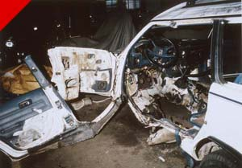

Submitted on Thu, 09/09/2010 - 2:25am
Note: Judi Bari and Darryl Cherney were IWW members at the time of these events in 1990.
By Kevin Fagan, Staff Writer, San Francisco Chronicle - September 8, 2010; Reproduced in accordance with Fair Use Guidelines.

It's an infamous case that never seems to go away, even after millions of dollars have been paid out in civil settlements and police say the trail has gone cold.
The case is the 1990 bombing in Oakland of Earth First environmental activists Judi Bari and Darryl Cherney, who were nearly killed when a nail-studded explosive device blew up in their car.
Nobody was ever charged with the attack, and now, two decades later, the FBI wants to destroy the last bits of evidence it has been storing ever since the investigation dribbled dry - remnants of the bomb and one like it that blew up in a North Bay town a few days earlier.
Not so fast, says Cherney, 54, who has never given up trying to solve the case himself.
Saying in court briefs that the evidence "provides the last best hope for learning who bombed Judi Bari," Cherney and his lawyers were in federal court Wednesday in San Francisco to try to force the FBI to turn the evidence over to them so they can run DNA and other tests on it.
Submitted on Wed, 09/08/2010 - 1:53pm
Momentum Builds as Workers Seek Relief for Mounting Economic Frustration - jimmyjohnsworkers.org
MINNEAPOLIS- From Clovis, California to Miami, Florida, Jimmy John's was besieged coast to coast on Labor Day by leafleting and pickets in support of the first-ever unionization effort at the national sandwich chain. The emergent IWW Jimmy Johns Workers Union is coordinating a National Week of Action against the company to reach out to workers and pressure Minneapolis franchise owners to meet with their employees, who moved to unionize on Thursday. Over the course of the week, actions are planned in 32 of 39 states in which the company operates.
“Working conditions are terrible- poverty wages, being forced to work while sick, inconsistent hours, management favoritism, the list goes on. We formed a union to fight for change, starting at Jimmy Johns today, and throughout the entire fast food industry tomorrow. These nationally-coordinated actions have shown company owner Jimmy John Liautaud that if he doesn't clean up his act, we'll take a bite out of his business,” said David Boehnke, a union member at Jimmy Johns.
The national corporate headquarters of Jimmy Johns has yet to respond to the unionization campaign, the first at the expanding sandwich empire. The union effort could have profound implications for other employers in the fast food industry, a sector known for the lowest rate of unionization– and lowest wages– in the United Sates. Only 1.8% of food service workers were represented by a union in 2009, far below the nation-wide figure of 12.3%, according to the Bureau of Labor Statistics.
The fast food workers' move to unionize is emblematic of mounting frustration amongst US workers with the sluggish pace of recovery from the Recession. With unemployment rates hovering around 9.5%, many workers view low wage service jobs as their only option. Employment in the food service industry is expected to grow 8.4% from 2008 to 2018, higher than the 7.7% rate predicted by the Bureau of Labor Statistics for all industries. Wages and working conditions in the fast food industry are widely regarded as substandard; in 2009, about 17% of food workers earned at or below $5.15 an hour after taxes, the highest percentage of any occupational group.
Submitted on Tue, 09/07/2010 - 4:12pm
IWW members met in St. Paul, Minnesota this past weekend for the annual IWW General Convention. Wobblies from the US, Canada, the UK, and Germany gathered to discuss union business, vote on constitutional amendments and resolutions, and of course to meet and get to know one another! The convention took place at Macalester College.
In addition to attending the convention, wobblies participated in a picket outside one of the Twin Cities' nine Jimmy John's locations on Saturday.
Submitted on Tue, 09/07/2010 - 3:18am
 The International Solidarity Commission of the Industrial Workers of the World is deeply concerned about current repression and detention of workers and activists in Bangladesh. At the current moment, we especially highlight the situation of Kalpona Akter of the Bangladesh Center for Worker Solidarity NGO (BCWS), and demand that she be released from detention, all charges against her be dropped, and that the NGO status of the BCWS be immediately reinstated.
The International Solidarity Commission of the Industrial Workers of the World is deeply concerned about current repression and detention of workers and activists in Bangladesh. At the current moment, we especially highlight the situation of Kalpona Akter of the Bangladesh Center for Worker Solidarity NGO (BCWS), and demand that she be released from detention, all charges against her be dropped, and that the NGO status of the BCWS be immediately reinstated.
Responding to the government?s cruel and insulting offer of merely $43 a month minimum wage, in the country with the lowest garment wages in the world, Bangladeshi workers took to the streets for five days. The workers were met with the full force of the Bangladeshi police and security forces, in the service of the bosses.
Submitted on Tue, 09/07/2010 - 2:56am
To the Board of Directors of the Ecology Center [recycling@ecologycenter.org]:
As you are aware, the Industrial Workers of the World represents the workers at Curbside Recycling, which the Ecology Center operates. Over recent years, we have seen a pattern of behavior of your management team that betrays a strong anti-union attitude and borders on outright union busting.
- During negotiations for a new contract in December of 2007, your negotiation team sought to remove from the contract the clause that permits our members to refuse to cross a picket line. In other words, they sought the power to try to turn our members into strike breakers.
- During the negotiations for a new contract in December of 2008, Ecology Center management held a captive audience meeting with our members. This meeting, intentionally called without informing the union representatives, was an attempt to treat the Union as an unwanted "third party". This is a standard method of professional
union busters.
At present, the IWW is filing for arbitration on behalf of one of its members. We are forced to do so due to flagrant violation of the contract by the Ecology Center management. This violation concerns the disciplining of one of our members.
- Ecology Center management decided this member was guilty before they even held a hearing with him to hear his explanation of events.
- Ecology Center management illegally demoted this member, in violation of the contract, thus saving themselves $7.50 per hour for every hour this member works.
- During the mediation step, the Ecology Center management once again made statements implying that the Union was some outside force, a "third party".
There are several different avenues that arbitration can take. The Ecology Center management has insisted on taking the most expensive avenue, knowing full well that the IWW is a small union that does not have a large treasury. While we are willing to fight the full length for our members, meaning that we will spend what is necessary, this tactic of the Ecology Center management is not lost upon us, especially in light of their previous actions. Meanwhile, the Ecology Center management team parades behind their "green" and "community oriented" banner while they trample on the rights of their workers and carry on what can only be described as an anti-union policy.